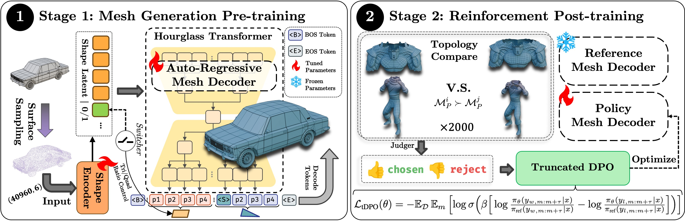
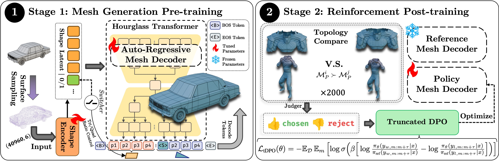

QuadGPT:
Native Quadrilateral Mesh Generation with Autoregressive Models
Jian Liu1,2, Chunshi Wang2, Song Guo1, Haohan Weng2, Zhen Zhou2, Zhiqi Li2, Jiaao Yu2, Yiling Zhu2, Jing Xu2, Biwen Lei2, Zhuo Chen2,Chunchao Guo2
1HKUST, 2Tencent Hunyuan


The generation of quadrilateral-dominant meshes is a cornerstone of professional 3D content creation.
However, existing generative models generate quad meshes by first generating triangle meshes and then merging triangles into quadrilaterals with some specific rules, which typically produces quad meshes with poor topology.
In this paper, we introduce QuadGPT, the first autoregressive framework for generating quadrilateral meshes in an end-to-end manner.
QuadGPT formulates this as a sequence prediction paradigm, distinguished by two key innovations: a unified tokenization method to handle mixed topologies of triangles and quadrilaterals, and a specialized Reinforcement Learning fine-tuning method tDPO for better generation quality.
Extensive experiments demonstrate that QuadGPT significantly surpasses previous triangle-to-quad conversion pipelines in both geometric accuracy and topological quality.
Our work establishes a new benchmark for native quad-mesh generation and showcases the power of combining large-scale autoregressive models with topology-aware RL refinement for creating structured 3D assets.
 

Our approach, QuadGPT, introduces the first autoregressive framework for the direct generation of native quadrilateral and mixed-element meshes. The methodology consists of three core pillars: (1) a unified serialization scheme to represent mixed-topology meshes as a single token sequence; (2) a powerful autoregressive architecture for generative pre-training; and (3) tDPO stage with a novel topological reward for direct topological optimization.
ToDO
If you find our work useful in your research, please consider citing us:
@misc{liu2025quadgptnativequadrilateralmesh,
title={QuadGPT: Native Quadrilateral Mesh Generation with Autoregressive Models},
author={Jian Liu and Chunshi Wang and Song Guo and Haohan Weng and Zhen Zhou and Zhiqi Li and Jiaao Yu and Yiling Zhu and Jing Xu and Biwen Lei and Zhuo Chen and Chunchao Guo},
year={2025},
eprint={2509.21420},
archivePrefix={arXiv},
primaryClass={cs.CV},
url={https://arxiv.org/abs/2509.21420},
}